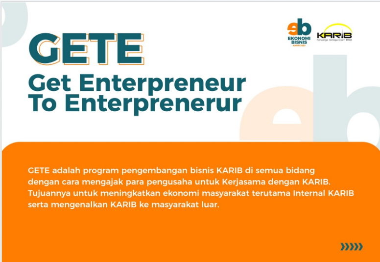
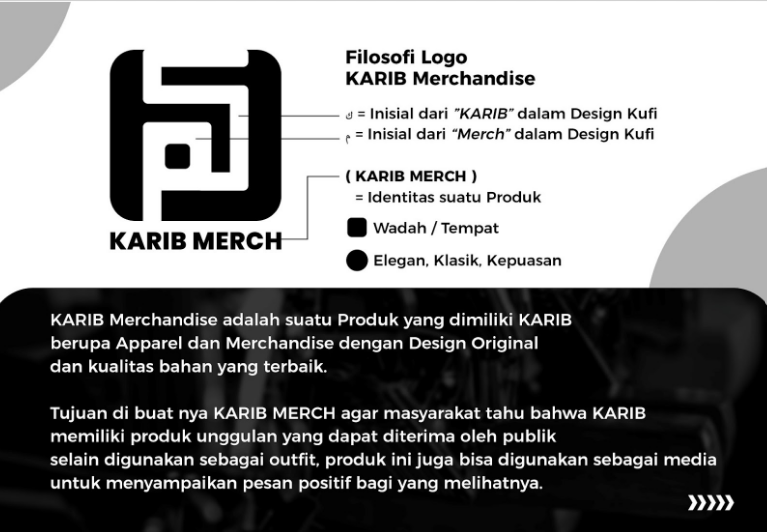
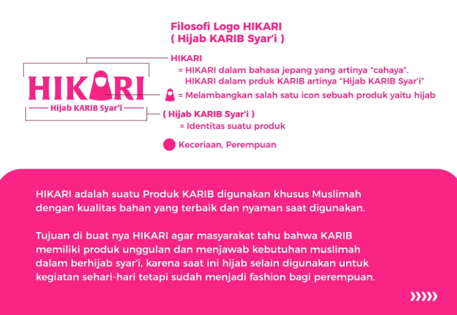
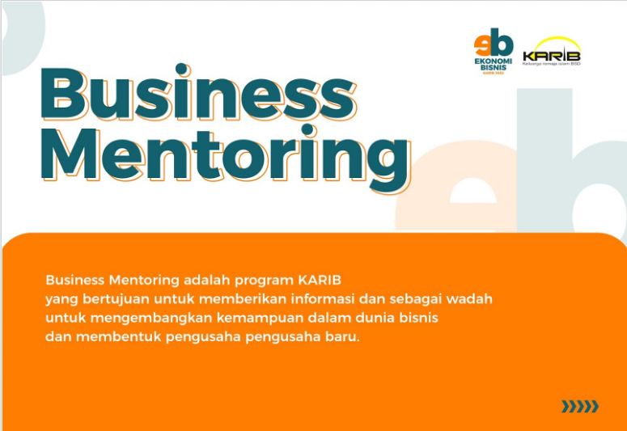

Divisi Bisnis


Divisi Ekonomi & Bisnis merupakan bagian dari Divisi KARIB (Keluarga Remaja Islam BSD) yang bergerak dan menciptakan kegiatan usaha melalui penjualan produk, marketing, serta edukasi mengenai bisnis. Tujuan dari Divisi Ekonomi dan Bisnis yaitu untuk mengembangkan nilai jual suatu produk/merk yang dimiliki oleh KARIB, dan membantu keuangan untuk kegiatan Dakwah KARIB.
Anggota
Kenalan dulu yuk sama anggota-anggota dari divisi bisnis nya KARIB

Nama

Nama

Nama

Nama

Nama
Nama
Program Kerja
Setiap divisi KARIB tentunya memiliki program kerja masing-masing agar tujuan nya dapat tercapai. Berikut ini adalah program dari divisi Bisnis :
GETE
GETE adalah program pengembangan bisnis KARIB di semua bidang dengan cara mengajak para pengusaha untuk Kerjasama dengan KARIB. Tujuannya untuk meningkatkan ekonomi masyarakat terutama Internal KARIB serta mengenalkan KARIB ke masyarakat luar.
Jobdesk :
- Mencari Partner Bisnis.
- Melakukan Pemasaran setiap Pekannya.
- Membuat Laporan Keuangan.
- Controlling / Pengawasan.
Team : Ilham, Resmia, Adin, Hamdan
KARIB Merch
Suatu Produk yang dimiliki KARIB berupa Apparel dan Merchandise dengan Design Original dan kualitas bahan yang terbaik. Tujuan di buat nya KARIB MERCH agar masyarakat tahu bahwa KARIB memiliki produk unggulan yang dapat diterima oleh publik, selain digunakan sebagai outfit, produk ini juga bisa digunakan sebagai media untuk menyampaikan pesan positif bagi yang melihatnya. Kalian dapat mengunjungi karib merchandise disni
HIKARI (Hijab KARIB Syar'i)
Suatu Produk KARIB digunakan khusus Muslimah dengan kualitas bahan yang terbaik dan nyaman saat digunakan. Tujuan di buat nya HIKARI agar masyarakat tahu bahwa KARIB memiliki produk unggulan dan menjawab kebutuhan muslimah dalam berhijab syar’i, karena saat ini hijab selain digunakan untuk kegiatan sehari-hari tetapi sudah menjadi fashion bagi perempuan.
Jobdesk :
- Membuat Design dan Konten Produk yang ingin di publikasikan.
- Mencari vendor bahan produk.
- Melakukan Pemasaran melalui media online / offline (open bazar).
- Membuat Laporan Penjualan.
Team : Adam, Diana, Mayang, Yanthie, Ghalih.
Business Mentoring
Business Mentoring adalah program KARIB yang bertujuan untuk memberikan informasi dan sebagai wadah untuk mengembangkan kemampuan dalam dunia bisnis dan membentuk pengusaha pengusaha baru.
Jobdesk:
- mencari mentor bisnis sesuai kurikulum yang di ajarkan.
- Mengadakan kelas/mentoring tentang dunia Bisnis.